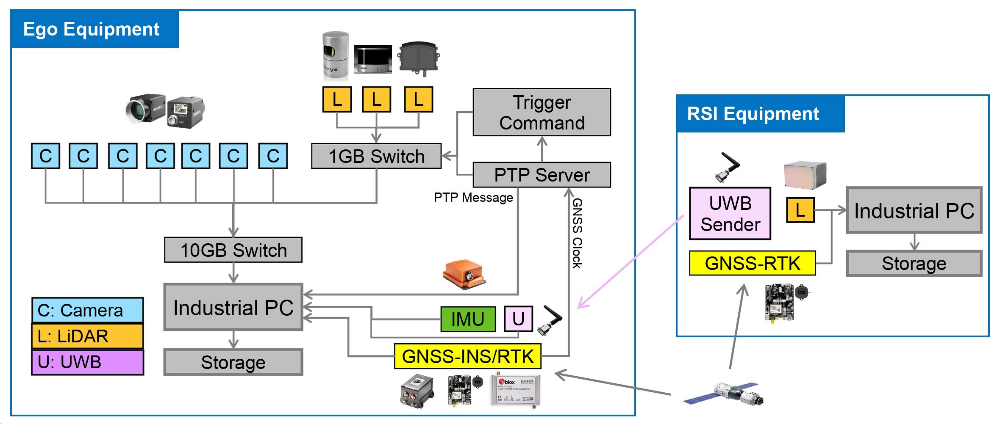
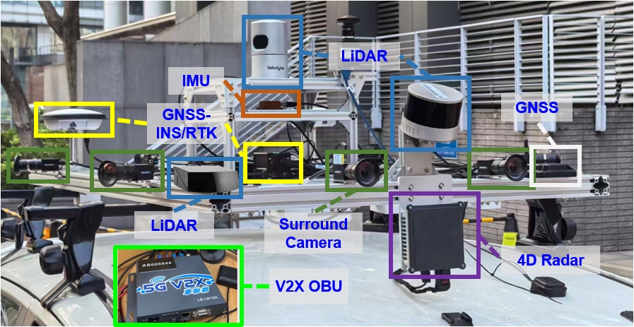

System architecture

Vehicle and roadside sensors connect to local logging computers through Ethernet and serial links. GNSS-disciplined PTP servers provide a shared time base, while GigE Vision Action Commands trigger the cameras together.
Onboard sensors

Cameras
Surround images from image_0–image_6, with image_1 and image_2 forming the front stereo pair. The original release also includes sky-pointing imagery.
LiDAR & 4D radar
Velodyne HDL-32E, Hesai XT32 and Hesai AT128P point clouds, plus GPAL-Ares-R7861 radar measurements in the original release.
IMU & vehicle motion
Xsens MTi-30 inertial measurements, with vehicle speed and steering-wheel angle from the CAN bus.
GNSS & UWB
u-blox ZED-F9P raw satellite observations and Nooploop P-B ranging to roadside anchors.
Ground truth
NovAtel SPAN-CPT7 GNSS-RTK/INS reference trajectories.
C-V2X
Genvict CB-LS20B onboard unit for vehicle–infrastructure communication.
| Sensor | Specifications & output |
|---|---|
| Hikvision MV-CS050-10GC PRORGB cameras × 7 | 2200 × 1740 pixels at 10 Hz; VM0428MP12 4 mm lenses. Field of view: 80.18° horizontal × 73.77° vertical. Fixed-exposure capture with a forward stereo pair and 360° surround coverage. |
| Sky-pointing cameraOriginal Small / Large Loop release | Upward-facing fisheye colour images. |
| Velodyne HDL-32ELiDAR | 32 channels at 10 Hz; 100 m range. Field of view: 360° horizontal, −30.67° to +10.67° vertical. Mounted at the centre of the roof rack. |
| Hesai XT32LiDAR | 32 channels at 10 Hz; 120 m range. Field of view: 360° horizontal, −16° to +15° vertical. Tilted forward by 20°. |
| Hesai AT128PLiDAR | 128 channels at 10 Hz; 210 m range at 10% reflectivity. Field of view: 120° horizontal × 25.4° vertical. |
| GPAL-Ares-R78614D radar · Original Small / Large Loop release | Front-facing radar at 13 Hz. Field of view: 150° horizontal × 30° vertical. Produces 3D point clouds with velocity measurements. |
| Xsens MTi-30IMU | Raw acceleration and angular velocity at 400 Hz, plus AHRS orientation. In-run bias instability: 15 μg for the accelerometer and 18°/h for the gyroscope. |
| u-blox ZED-F9PRaw GNSS | Multi-constellation, dual-frequency raw GNSS observations at 1 Hz. |
| Nooploop P-BUWB | Two-way ranging to roadside anchors at 50 Hz, with decimetre-level ranging accuracy. |
| NovAtel SPAN-CPT7GNSS-RTK/INS reference | NovAtel OEM7 GNSS receiver and Honeywell HG4930 IMU. Provides 6-DoF reference poses at 100 Hz through tightly coupled GNSS/INS post-processing in Inertial Explorer. |
| Vehicle CAN busOBD-II interface | Vehicle speed and steering-wheel angle at 100 Hz for wheel odometry and vehicle-kinematics constraints. |
| Genvict CB-LS20BC-V2X onboard unit | LTE-V2X PC5 sidelink in the 5.9 GHz band, using a 20 MHz channel. Exchanges position states and sensor observations with roadside units. |
Roadside equipment
| Sensor | Specifications & output |
|---|---|
| Innovusion JaguarHKSTP LiDAR | 300 channels at 10 Hz; 280 m range. Field of view: 100° horizontal × 40° vertical. |
| Seyond Falcon Prime FP1East Kowloon LiDAR | 10 Hz; 1550 nm wavelength; 250 m range at 10% reflectivity. Field of view: 120° horizontal × 25° vertical. |
| RoboSense RS-LiDAR-M1East Kowloon LiDAR | 125-beam MEMS solid-state LiDAR at 10 Hz; 150 m range at 10% reflectivity. Field of view: 120° horizontal × 25° vertical. |
| u-blox ZED-F9PRaw GNSS | Raw GNSS observations at 1 Hz for roadside differential positioning. |
| Nooploop P-BUWB anchor | Fixed-anchor ranging to the vehicle at 50 Hz. |
| C-V2X roadside unitRSU | LTE-V2X PC5 communication with the vehicle OBU over the shared 5.9 GHz, 20 MHz sidelink. |
| NVIDIA Jetson AGX OrinEdge computer | Local sensor acquisition, storage and edge processing. |